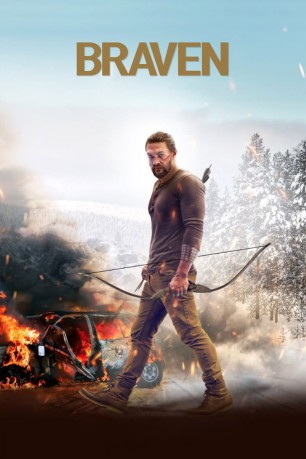

#10131 Braven
 gesehen am 11.12.2018
gesehen am 11.12.2018
 
 IMDB-Wertung: 6.1 / 10
IMDB-Wertung: 6.1 / 10  Tomatometer: 75
Tomatometer: 75  Metascore: 61
Metascore: 61 
Joe verdient seinen Lebensunterhalt als Baumfäller und fährt eines Tages mit seinem Vater auf die abgelegene Waldhütte der Familie, wo sie ein ruhiges Wochenende verbringen wollen. In der Hütte entdecken sie Heroin, das Drogenschmuggler dort deponiert haben. Als die Kriminellen plötzlich zurückkehren, sind Joe und sein Vater gezwungen, um ihr Überleben zu kämpfen...
Jahr: 2018
Dauer: 93 Minuten
FSK: 16
Land: Kanada Studio: UFATonspuren: DTS - ,
Untertitel: Deutsch,
Auflösung: 1080p (1920x816) Größe: 5355 MB
Genre: Action, Drama
Regisseur: Lin Oeding
Drehbuch: Thomas Pa'a Sibbett, Michael Nilon, Thomas Pa'a Sibbett
Soundtrack:
Darsteller:
Datei: X:\2018(A-F)\Braven (2018, FSK16, 1920x816).mkv seit 11.12.2018
Festplatte: HD 2017(A-Z)-2018(A-F)
 Es gibt insgesamt 151 Filme in der Gruppe '2018(A-F)'
Es gibt insgesamt 151 Filme in der Gruppe '2018(A-F)'